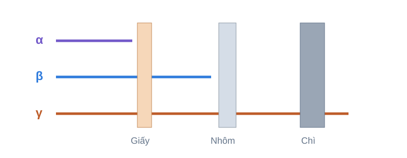

Có thể sử dụng
Cấu tạo hạt nhân và đồng vị
Khám phá cấu tạo hạt nhân, xác định số proton, neutron và nucleon, đọc kí hiệu hạt nhân, nhận diện đồng vị và phân tích dãy đồng vị.
Mở bài mô phỏng →HỌC LIỆU VẬT LÝ THPT
Hệ thống gồm các bài mô phỏng trực tuyến về Vật lý hạt nhân dành cho học sinh Trung học phổ thông. Theo tiến trình Khám phá – Thí nghiệm – Kiểm chứng, người học quan sát hiện tượng, thực hiện nhiệm vụ và đối chiếu kết quả với mô hình vật lí.
BỘ HỌC LIỆU TƯƠNG TÁC
Chọn một chủ đề bên dưới để bắt đầu. Mỗi bài mô phỏng được thiết kế trực quan, có hoạt động khám phá, nhiệm vụ học tập và phần kiểm chứng kết quả.
Tìm hiểu cấu tạo hạt nhân, đồng vị và năng lượng liên kết.
Khám phá cấu tạo hạt nhân, xác định số proton, neutron và nucleon, đọc kí hiệu hạt nhân, nhận diện đồng vị và phân tích dãy đồng vị.
Mở bài mô phỏng →
Khám phá độ hụt khối, năng lượng liên kết và năng lượng liên kết riêng; khảo sát xu hướng Eₗₖ/A theo số khối và liên hệ với phân hạch, nhiệt hạch.
Mở bài mô phỏng →Khám phá các dạng phân rã, tính ngẫu nhiên và quy luật phóng xạ.

Mô phỏng phân rã α, β⁻, β⁺ và chuyển mức γ; theo dõi sự thay đổi của A, Z, N, xác định hạt nhân con và phân tích chuỗi biến đổi.
Mở bài mô phỏng →
Quan sát quá trình phân rã ngẫu nhiên, khảo sát chu kỳ bán rã và so sánh kết quả mô phỏng Monte Carlo với mô hình lý thuyết.
Mở bài mô phỏng →Khảo sát khả năng đâm xuyên và sự suy giảm của bức xạ qua vật chất.

Khám phá khả năng truyền qua vật chất của bức xạ α, β và γ; khảo sát ảnh hưởng của loại bức xạ, độ dày và vật liệu chắn.
Mở bài mô phỏng →
Khảo sát định lượng quy luật suy giảm của tia gamma qua vật chất; xử lý dữ liệu, xác định hệ số suy giảm μ và bề dày bán giá trị.
Mở bài mô phỏng →Khám phá các quá trình phân hạch và nhiệt hạch cùng sự giải phóng năng lượng.

Khám phá phân hạch U-235, kiểm tra bảo toàn A và Z, tính năng lượng Q, so sánh các kênh phân hạch và khảo sát mô hình phản ứng dây chuyền.
Mở bài mô phỏng →
Khám phá các phản ứng nhiệt hạch của hạt nhân nhẹ, kiểm tra bảo toàn A và Z, tính năng lượng Q và so sánh các kênh phản ứng tiêu biểu.
Mở bài mô phỏng →